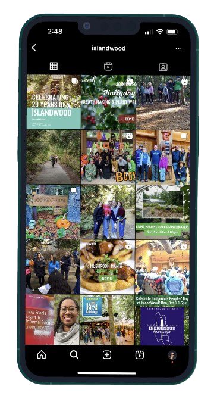
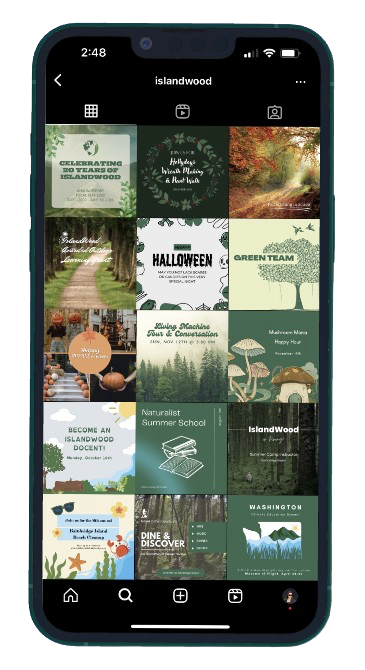

Transforming environmental education in the digital age. IslandWood is a non-profit organization dedicated to environmental education.
In this project, I aimed to revitalize IslandWood's visual identity by redesigning their logo and mobile interface, harmonizing elements of nature and modern design to symbolize their commitment to innovative environmental education.
Visual Inspiration
My mood board draws from nature-inspired elements to align with IslandWood's mission. This visual guide helped ensure that the redesign stayed true to the organization's environmental focus while introducing modern design elements.
Mood Board
Strategic Redesign
While IslandWood’s social media presence was consistent, the content was too busy, lacked distinction, and failed to captivate. To enhance brand cohesion, I aligned their social media aesthetic with their website’s nature-inspired palette, infusing moments of brightness through strategic use of neutral elements.
IslandWood's Instagram Feed
My Proposed Instagram Feed
Logo Evolution
IslandWood's original logo, although nature-centric, lacked distinctiveness and a clear association with their mission.
Original Logo
I began by sketching rough ideas with pencil and paper, incorporating keywords that capture IslandWood’s brand essence and connection to nature.

Logo Brainstorm with Pencil and Paper
Transitioning from sketches to a high-fidelity design using Figma, I crafted a logo that better represents IslandWood’s mission and modernizes their visual identity.
Redesigned Logo
Sketches
Starting with initial sketches on paper, I outlined four crucial screens—Homepage, Hamburger Menu, Education Programs Page, and Community Waters Science Unit Page—each pivotal in the user journey and experience.

Sketches with Pencil and Paper
Low-Fidelity Wireframes
Using Figma, I translated these hand-drawn sketches into low-fidelity wireframes, refining the structure and layout of each screen.

Homepage

Hamburger Menu

Education Programs

Community Waters Science Unit
High-Fidelity Prototype
After finalizing the wireframes, I created high-fidelity prototypes to visualize the final design. These prototypes incorporate the updated branding elements and improved user interface, providing a more engaging and intuitive experience for users.
Original Mobile Screens


Redesigned Mobile Screens


Reflection
This project was a pivotal experience in my design journey, as it was my first time with graphic design and branding. Creating the logo from scratch challenged me to blend IslandWood’s mission with natural elements. Through this project, I honed my skills in visual storytelling and design coherence, learning the importance of thoughtful design choices in shaping a brand’s identity.